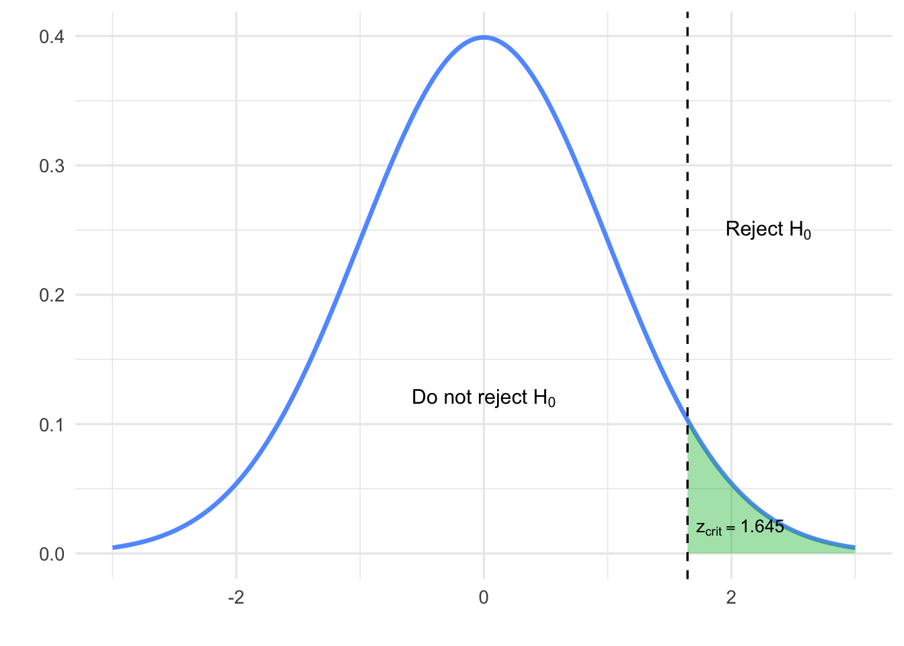
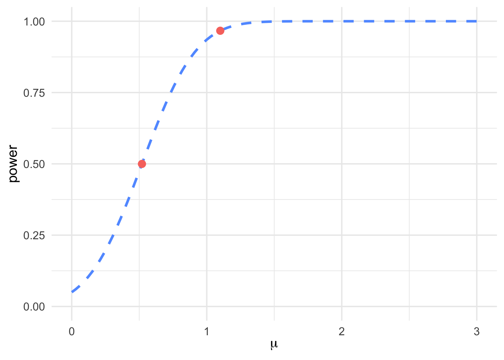

Chapter 7 Statistical Power
7.1 Introduction
Definition 7.1 The probability that a fixed level \(\alpha\) significance test will reject \(H_0\) when a particular alternative value of the parameter is true is called the power of the test against that alternative.
The statistical power of a test is its ability to detect an effect if it exists in reality.
It is the probability of correctly rejecting \(H_0\) when \(H_0\) is false in reality.
\[\text{Power} = P(\text{reject } H_0 \mid H_0 \text{ false})\]
\[0 < \text{power} < 1\]
Power close to 1 (high power):
Test is good at detecting effects.
Power close to 0 (low power):
Test is not reliable (i.e., we expect the test will not reject \(H_0\)
when \(H_0\) is false).
Power is affected by:
The effect
(larger differences between reality and the null are easier to detect)Sample size
(larger samples increase power)Significance level (\(\alpha\))
(as \(\alpha\) increases, easier to reject \(H_0\))Variability in data
(lower variability, higher power)
7.2 Type I and Type II Errors
It is possible to make an incorrect conclusion on a hypothesis test.
Type I: Incorrectly reject \(H_0\) when \(H_0\) is true in reality.
Type II: Incorrectly fail to reject \(H_0\) when \(H_0\) is false in
reality.
Reality vs Conclusion Table:
|
Note: Type I errors are generally considered worse.
Let \(\beta\) be the probability of a Type II error. Then:
\[\text{Power} = 1 - \beta = 1 - P(\text{Type II})\]
Example 7.1 The cola maker determines that a sweetness loss is too large to accept if the mean response for all tasters is \(\mu = 1.1\). Will a 5% significance test detect this?
Hypotheses: \[\begin{aligned} H_0\!:&\ \mu = 0 \\ H_A\!:&\ \mu > 0 \end{aligned}\]
Assume: \[n = 10, \quad \sigma = 1, \quad \alpha = 0.05\]
Step 1: Determine the rejection region.
Since the test is one-sided with \(\alpha = 0.05\), we find: \[z_{\text{crit}} = 1.645 \quad \text{(from Z-table)}\]
We reject \(H_0\) if: \[Z^* > 1.645\]

Figure 7.1: Rejection region for \(Z\) with \(\alpha = 0.05\)
Step 2: Find the equivalent critical value of \(\bar{x}\).
Since \(\sigma\) is known, \[Z = \frac{\bar{x} - \mu_0}{\sigma/\sqrt{n}} \quad \Rightarrow \quad 1.645 = \frac{\bar{x}_{\text{crit}} - 0}{1/\sqrt{10}} \Rightarrow \bar{x}_{\text{crit}} \approx 0.520\]
So we reject \(H_0\) if \(\bar{x} > 0.520\).
Step 3: Calculate the power when \(\mu = 1.1\) is true.
\[P\left(Z > \frac{0.520 - 1.1}{1/\sqrt{10}}\right) \approx P(Z > -1.83) = 1 - 0.0336 = 0.9664\]
Interpretation: There is a 96.6% chance the test correctly detects \(\mu = 1.1\).

Figure 7.2: Power curve showing shaded rejection area under \(H_A\)
This result can also be visualized using a power curve, which shows how the probability of correctly rejecting \(H_0\) increases with the true mean \(\mu\).

Figure 7.3: Power curve for a one-sided test with points at \(\mu = 0.52\) and \(\mu = 1.1\)
If we reject \(H_0\) when in fact \(H_0\) is true, this is a Type I
error.
If we fail to reject \(H_0\) when in fact \(H_a\) is true, this is a Type
II error.
The significance level \(\alpha\) of any fixed level test is the
probability of a Type I error.
The power of a test against any alternative is 1 minus the
probability of a Type II error for that alternative.
The probability of making a Type II error is denoted by \(\beta\).
Type I Error
\(H_0\) is true, but sampling variation in the data leads you to reject
\(H_0\), you’ve made a Type I error.
When \(H_0\) is true, a Type I error occurs if \(H_0\) is rejected.
Type II Error
\(H_0\) is false, but sampling variation in the data does not lead you to
reject \(H_0\), you’ve made a Type II error.
When \(H_0\) is false, a Type II error occurs if \(H_0\) is NOT
rejected.
Example 7.2 According to Access and Support to Education and Training Survey (2008), of 4,756 adult Canadians, 1,581 indicated that they worked at a job or business at anytime (between July 2007 and June 2008), regardless of the number of hours per week.
Is there evidence to suggest that the true proportion \(p\) is greater than 0.50?
\[\begin{aligned} H_0\!:&\ p = 0.50 \\ H_a\!:&\ p > 0.50 \end{aligned}\]
R Output
prop.test(x = 1581, n = 4756, p = 0.50,
alternative = "greater", correct = FALSE)
##
## 1-sample proportions test without continuity
## correction
##
## data: 1581 out of 4756, null probability 0.5
## X-squared = 534.24, df = 1, p-value = 1
## alternative hypothesis: true p is greater than 0.5
## 95 percent confidence interval:
## 0.3212845 1.0000000
## sample estimates:
## p
## 0.3324222 \(P\text{-value} > \alpha = 0.05\); we Fail to Reject \(H_0\).
This means we could be making a Type II error.We indicated that there is no evidence to conclude that the true proportion of adult Canadians who worked at a job or business at anytime (between July 2007 and June 2008), regardless of the number of hours per week, was more than 0.50 — this conclusion implies that \(H_0: p = 0.50\) is plausible, but we could be wrong.
Example 7.3 Bottles of a popular cola are supposed to contain 300 milliliters (ml) of cola. There is some variation from bottle to bottle because the filling machinery is not perfectly precise. The distribution of contents is Normal with standard deviation \(\sigma = 3\) ml. Will inspecting 6 bottles discover underfilling?
The hypotheses are: \[\begin{aligned} H_0\!:&\ \mu = 300 \\ H_a\!:&\ \mu < 300 \end{aligned}\]
A 5% significance test rejects \(H_0\) if \(z_* \leq -1.645\), where the test statistic \(z_*\) is: \[z_* = \frac{\bar{x} - 300}{3 / \sqrt{6}}\]
Power calculations help us see how large a shortfall in the bottle contents the test can be expected to detect. Find the power of this test against the alternative \(\mu = 299\).
Step 1. Write the rule for rejecting \(H_0\) in terms of \(\bar{x}\).
We know that \(\sigma = 3\), so the \(z\) test rejects \(H_0\) at the \(\alpha = 0.05\) level when: \[z = \frac{\bar{x} - 300}{3 / \sqrt{6}} < -1.645\]
This is the same as: \[\bar{x} < 300 - 1.645 \cdot \frac{3}{\sqrt{6}} \quad \Rightarrow \quad \bar{x} < 297.985\]
Step 2. The power is the probability of this event under the condition that the alternative \(\mu = 299\) is true.
To calculate this probability, standardize \(\bar{x}\) using \(\mu = 299\): \[\begin{aligned} \text{power} &= P(\bar{x} < 297.985 \mid \mu = 299) \\ &= P\left( Z < \frac{297.985 - 299}{3 / \sqrt{6}} \right) \\ &= P(Z < -0.83) = 0.2033 \end{aligned}\]
7.3 Using Power to Determine Sample Size
When designing a study, one of the most important decisions is how large a sample to collect. If the sample size is too small, even meaningful effects may go undetected due to low statistical power. On the other hand, collecting an unnecessarily large sample can be inefficient and costly. By using power calculations, researchers can determine the minimum sample size needed to detect an effect of a given size with a specified probability (power), while controlling for Type I error. This section introduces how statistical power is used in planning and justifying sample sizes before conducting a hypothesis test.
Example 7.4 Suppose an experimenter wishes to test \[\begin{aligned}
H_0\!:&\ \mu = 100 \\
H_a\!:&\ \mu > 100
\end{aligned}\] at the \(\alpha = 0.05\) level of significance and wants
\(1 - \beta\) to equal 0.60 when \(\mu = 103\). What is the smallest (i.e.,
cheapest) sample size that will achieve that objective? Assume that the
variable being measured is Normally distributed with \(\sigma = 14\).
Step 1. Write the rule for rejecting \(H_0\) in terms of \(\bar{x}_*\).
By definition, \[\alpha = P(\text{we reject } H_0 \mid \mu = 100) = P\left( \bar{X} > \bar{x}_* \mid \mu = 100 \right) = P\left( Z > \frac{\bar{x}_* - 100}{14 / \sqrt{n}} \right) = 0.05\]
From the standard normal table, \(P(Z > 1.645) = 0.05\), so: \[\bar{x}_* = 100 + 1.645 \cdot \frac{14}{\sqrt{n}}\]
Step 2. The power is the probability of this event under the condition that the alternative \(\mu = 103\) is true.
To calculate this probability, standardize \(\bar{x}\) using \(\mu = 103\):
\[\begin{aligned} \text{power} &= 1 - \beta = P(\bar{X} > \bar{x}_* \mid \mu = 103) \\ &= P\left( Z > \frac{\bar{x}_* - 103}{14 / \sqrt{n}} \right) = 0.60 \end{aligned}\]
From the standard normal table, \(P(Z > -0.25) \approx 0.5987 \approx 0.60\), so: \[\frac{\bar{x}_* - 103}{14 / \sqrt{n}} = -0.25 \Rightarrow \bar{x}_* = 103 - 0.25 \cdot \frac{14}{\sqrt{n}}\]
Step 3. Solving for \(n\)
From Steps 1 and 2: \[100 + 1.645 \cdot \frac{14}{\sqrt{n}} = 103 - 0.25 \cdot \frac{14}{\sqrt{n}}\]
Solving for \(n\): \[\left( \frac{(1.645 + 0.25) \cdot 14}{103 - 100} \right)^2 \approx 78.2045\]
Therefore, a minimum of 79 observations must be taken to guarantee that the hypothesis test will have the desired power of at least 0.60.
Example 7.5 A vending machine advertises that it dispenses 225 ml cups of coffee (\(\sigma = 7\) ml). You believe the mean volume of coffee per cup is something less than 225 ml. You plan to sample 40 cups of coffee from this machine to test your hypothesis.
If the true mean volume of coffee per cup is 223 ml, what is the power of your test at \(\alpha = 0.05\)? (Homework)
How many coffee cups should you sample if you want to raise the power in part (a) to 0.80?
Solution (b):
Step 1. Write the rule for rejecting \(H_0\) in terms of \(\bar{x}_*\).
By definition: \[\begin{aligned} \alpha &= P(\text{we reject } H_0 \mid \mu = 225) \\ &= P(\bar{X} < \bar{x}_* \mid \mu = 225) \\ &= P\left( Z < \frac{\bar{x}_* - 225}{7 / \sqrt{n}} \right) = 0.05 \end{aligned}\]
From the standard normal table, \(P(Z < -1.645) = 0.05\), so: \[\bar{x}_* = 225 - 1.645 \cdot \frac{7}{\sqrt{n}}\]
Step 2. The power is the probability of this event under the condition that the alternative \(\mu = 223\) is true.
To calculate this probability, standardize \(\bar{x}\) using \(\mu = 223\):
\[\begin{aligned} \text{power} &= 1 - \beta = P(\bar{X} < \bar{x}_* \mid \mu = 223) \\ &= P\left( Z < \frac{\bar{x}_* - 223}{7 / \sqrt{n}} \right) = 0.80 \end{aligned}\]
From the table, \(P(Z < 0.84) = 0.7995 \approx 0.80\), so: \[\frac{\bar{x}_* - 223}{7 / \sqrt{n}} = 0.84 \quad \Rightarrow \quad \bar{x}_* = 223 + 0.84 \cdot \frac{7}{\sqrt{n}}\]
Step 3. Solving for \(n\)
From Steps 1 and 2: \[225 - 1.645 \cdot \frac{7}{\sqrt{n}} = 223 + 0.84 \cdot \frac{7}{\sqrt{n}}\]
Solving for \(n\): \[n = \left( \frac{(1.645 + 0.84) \cdot 7}{225 - 223} \right)^2 \approx 75.6465\]
Therefore, a minimum of 76 observations must be taken to guarantee that the hypothesis test will have the desired precision.
Example 7.6 A newsletter reports that 90% of adults drink milk. The researchers are interested in investigating if fewer than 90% of adults drink milk (at \(\alpha = 0.05\)). They collect a random sample of 200 adults in a certain region.
Calculate power of the test if the percentage of adults who drink milk is really 85%.
\[\begin{aligned} \text{Under } H_0 &: \hat{p}^* = 0.90 - 1.645 \sqrt{\frac{0.90(1 - 0.90)}{200}} = 0.8651 \\ \text{Power} &= P(\text{Reject } H_0 \mid p = 0.85) \\ &= P(\hat{p} < 0.8651 \mid p = 0.85) \\ &= P\left(Z < \frac{0.8651 - 0.85}{\sqrt{\frac{0.85(1 - 0.85)}{200}}} \right) \\ &= P(Z < 0.5980) \approx 0.7250 \end{aligned}\]
R Output
Calculate beta if the percentage of adults who drink milk is really 85%.
\[\begin{aligned} \beta &= 1 - \text{Power} = 1 - 0.725 = 0.275 \end{aligned}\]
How many adults should you sample if you want to raise the power in part (a) to 0.80?
Step 1: Determine rejection cutoff under \(H_0 : p = 0.90\) \[\begin{aligned} \hat{p}^* = 0.90 - 1.645 \sqrt{\frac{0.90(1 - 0.90)}{n}} \end{aligned}\]
Step 2: Set power to 0.80 under \(p = 0.85\) \[\begin{aligned} P\left( \frac{\hat{p} - 0.85}{\sqrt{\frac{0.85(1 - 0.85)}{n}}} < \frac{\hat{p}^* - 0.85}{\sqrt{\frac{0.85(1 - 0.85)}{n}}} \right) &= 0.80 \\ \frac{\hat{p}^* - 0.85}{\sqrt{\frac{0.85(1 - 0.85)}{n}}} &= 0.8416 \\ \hat{p}^* &= 0.85 + 0.8416 \sqrt{\frac{0.85(1 - 0.85)}{n}} \end{aligned}\]
R Output
Step 3: Equating expressions for \(\hat{p}^*\) \[\begin{aligned} 0.90 - 1.645 \sqrt{\frac{0.90(1 - 0.90)}{n}} &= 0.85 + 0.8416 \sqrt{\frac{0.85(1 - 0.85)}{n}} \\ 0.05 &= \left(1.645 \sqrt{0.90(0.10)} + 0.8416 \sqrt{0.85(0.15)}\right) \cdot \frac{1}{\sqrt{n}} \\ \sqrt{n} &= \frac{0.4935 + 0.3005}{0.05} = 15.87 \Rightarrow n \approx 253 \end{aligned}\]
Example 7.7 A newsletter reports that 90% of adults drink milk. The researchers are
interested in investigating if less than 90% of adults drink milk (at
\(\alpha = 0.05\)). They collect a random sample of 100 adults in a
certain region.
Calculate power of the test if the percentage of adults who drink milk
is really 85%.
We test: \[\begin{aligned} H_0 &: p = 0.90 \\ H_a &: p < 0.90 \end{aligned}\]
The rejection region is determined by: \[\begin{aligned} \alpha &= 0.05 = P(\text{reject } H_0 \mid H_0 \text{ is true}) \\ P(Z < -1.645) &= 0.05 \quad \text{(Z critical value is -1.645)} \end{aligned}\]
Now calculate power under the alternative \(p = 0.85\):
\[\begin{aligned} \text{Power} &= P(\text{reject } H_0 \mid H_0 \text{ is false}) \\ &= P\left( \frac{\hat{p} - 0.90}{\sqrt{\frac{0.90(1 - 0.90)}{100}}} < -1.645 \,\middle|\, p = 0.85 \right) \\ &= P(\hat{p} < 0.85065 \mid p = 0.85) \\ &= P\left( Z < \frac{0.85065 - 0.85}{\sqrt{\frac{0.85(1 - 0.85)}{100}}} \right) \\ &= P(Z < 0.0182) \approx 0.5072 \end{aligned}\]
R Output
Example 7.8 A newsletter reports that 90% of adults drink milk. The researchers are
interested in investigating if less than 90% of adults drink milk (at
\(\alpha = 0.05\)). They collect a random sample of 50 adults in a
certain region.
Calculate power of the test if the percentage of adults who drink milk
is really 85%.
\[\begin{aligned} H_0 &: p = 0.90 \\ H_a &: p < 0.90 \end{aligned}\]
The rejection region is determined by: \[\begin{aligned} \alpha &= 0.05 = P(\text{reject } H_0 \mid H_0 \text{ is true}) \\ P(Z < -1.645) &= 0.05 \quad \text{(Z critical value is -1.645)} \end{aligned}\]
Power: \[\begin{aligned} \text{Power} &= P(\text{reject } H_0 \mid H_0 \text{ is false}) \\ &= P\left( \frac{\hat{p} - 0.90}{\sqrt{\frac{0.90(1-0.90)}{50}}} < -1.645 \;\middle|\; p = 0.85 \right) \\ &= P(\hat{p} < 0.85065 \mid p = 0.85) \\ &= P\left( Z < \frac{0.85065 - 0.85}{\sqrt{\frac{0.85(1 - 0.85)}{50}}} \right) \\ &= P(Z < -0.3921) \\ &\approx 0.3475 \end{aligned}\]
R Output
If we keep \(\alpha\) at the same size, larger sample sizes increase the power of the test because sampling variability (sampling distributions) are much narrower.
If \(H_a : \mu > \mu_0\), then \[\text{Power}(\mu_a) = \pi(\mu_a) = P \left[ Z \geq Z_{\alpha} + \frac{\sqrt{n}(\mu_0 - \mu_a)}{\sigma} \right]\]
where \(\mu_a > \mu_0\).
If \(H_a : \mu < \mu_0\), then \[\text{Power}(\mu_a) = \pi(\mu_a) = P \left[ Z \leq -Z_{\alpha} + \frac{\sqrt{n}(\mu_0 - \mu_a)}{\sigma} \right]\]
where \(\mu_a < \mu_0\).
If \(H_a : \mu \ne \mu_0\), then \[\begin{aligned} \text{Power}(\mu_a) &= \pi(\mu_a) \\ &= 1 - P \left[ -Z_{\alpha/2} + \frac{\sqrt{n}(\mu_0 - \mu_a)}{\sigma} \leq Z \leq Z_{\alpha/2} + \frac{\sqrt{n}(\mu_0 - \mu_a)}{\sigma} \right] \end{aligned}\]
where \(\mu_a \ne \mu_0\).
You need to know:
Standard deviation, \(\sigma\)
Significance level, \(\alpha\)
Effect size to detect, \(\mu_0 - \mu_a\)
Calculations of power (or of error probabilities) are useful for planning studies because we can make these calculations before we have any data. Once we actually have data, it is more common to report a P-value rather than a reject-or-not decision at a fixed significance level \(\alpha\). The P-value measures the strength of the evidence provided by the data against \(H_0\). It leaves any action or decision based on that evidence up to each individual. Different people may require different strengths of evidence.